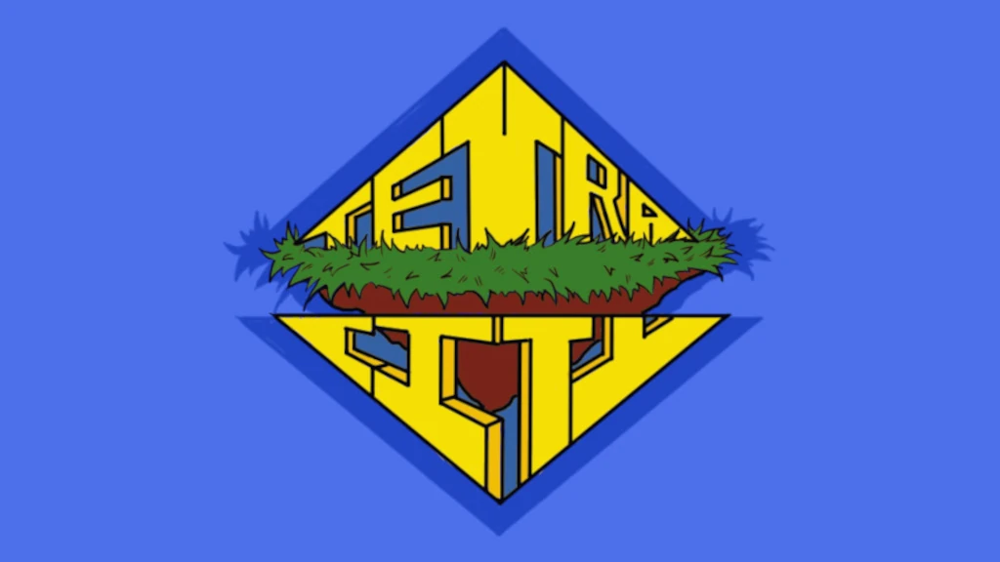
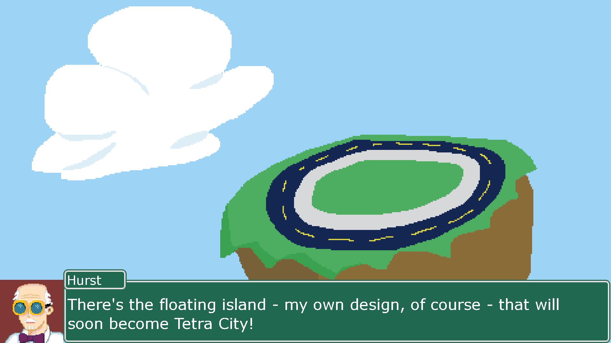

Tetra City

Tetra City is a city builder puzzle game, made in Godot using GDScript, that I worked on at Georgia Tech for VGDev during Fall 2024.

Tetra City’s gameplay is very similar to Tetris, stacking different polyominos on each other, but with a twist: the polyominos are all buildings and you are the mayor. As the mayor, you must stack different buildings adjacent to each other, with each building giving different bonuses. Blocks are purchased each turn, with turns consisting of buying as many building polyominos you wish [or can afford] and stacking them on the board. The most basic building, an apartment block, for instance, gives one unit of currency to spend on further buildings, but there are more complex buildings, such as the church, which increases the odds of buildings which are adjacent to appearing in the shop. The ultimate goal is to purchase a nuclear reactor to power the island board you are playing on, which just so happens to be an island with limited fuel, hence the need for nuclear power.

For Tetra City, I was primarily responsible for the algorithms deciding which building to spawn, weighting it based on which buildings have been commonly purchased and which haven’t, encouraging the player to purchase a wide array of buildings. This also included implementing the aforementioned in-game church building which further affects spawn weights. I was also responsible for tweaking and testing these algorithms to ensure the game was difficult enough, fair, and most importantly, fun. As a school project, I did help out where I could, and contributed some art assets to both some buildings and the UI.